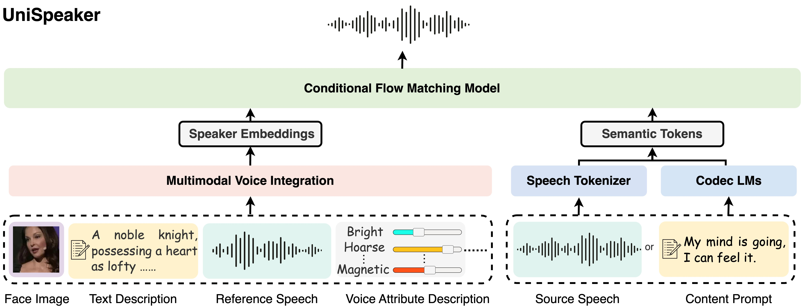

Unispeaker: A unified speech generation model for multimodality-driven voice control
[Paper] [Code]
Anonymous authors
Abstract: Recently, the generated speech under zero-shot conditions has progressively approached the realism of target speakers' recordings, yet multimodal voice creation remains an evolving field. In various scenarios, people often seek to control and create voice characteristics through different voice description modalities. This paper introduces UniSpeaker, a unified multimodal-driven voice for speech generation model that incorporates face images, text descriptions, attribute descriptions, and reference speech for voice control and creation. To address the modality deficiencies and limitations of previous generation approaches, we are the first to integrate multimodal voice control into a large-scale speech generation framework, employing self-distillation for enhanced voice disentanglement. Additionally, we introduce a unified voice aggregator based on KV-Former and apply soft contrastive loss, mapping various voice description modalities into a shared voice space, resulting in the generated voice being more aligned with the input voice descriptions. We evaluated UniSpeaker across 5 multimodal voice control tasks, and the experimental results demonstrate that UniSpeaker outperforms previous modality-specific models, producing multimodal-driven speech with superior voice appropriateness and speech quality.

Contents
Face-Driven Personalized Text-to-Speech
It is worth mentioning that the goal of face-driven speech synthesis is to generate voice characteristics that matches the face, rather than to synthesize the voice characteristics that is identical to that of the speaker.
| Text | Face Image | Reference Speech | Baseline | UniSpeaker |
|---|---|---|---|---|
| It impacts sentencing. | ||||
| She found us we found her disease. | ||||
| And that's even if you're working way more than full time hours. | ||||
| They were unexpected pleasures. | ||||
| Look at the end to see the animal. | ||||
| We were so excited. |
Face-Driven Voice Conversion
| Source Speeh | Face Image | Reference Speech | Baseline | UniSpeaker |
|---|---|---|---|---|
Text Description-Driven Personalized Text-to-Speech
| Content Prompt | Speaker Identity Desciprion | Baseline | UniSpeaker |
|---|---|---|---|
| Here I, for instance, quite naturally want to live, in order to satisfy all my capacities for life, and not simply my capacity for reasoning, that is, not simply one twentieth of my capacity for life. | W is a lovely princess, and he is noted with respect. | ||
| They were now close to the gate, and Cheesacre paused before he entered. | C is the fearless beast of the Nocknian will, a seasoned warrior of every battle, known for his brutality. | ||
| And they did push so. | J is a visionary leader, at the helm of an ambitious expansionist nation. Despite being disabled in the war, he steadfastly leads his country with unwavering determination. | ||
| Off for the prison ship. | M is a character full of contradictions; she embraces humanity while punishing the hypocritical and fallen. She opposes injustice and fights against the forces that suppress the truth. | ||
| It's part of my secret. | E is an adventurous wanderer full of vitality with mysterious abilities yet unknown, he is brave and fearless, |
Text Description-Driven Voice Conversion
| Source Speech | Speaker Identity Desciprion | Reference Speech | Converted Speech |
|---|---|---|---|
| W is a lovely princess, and he is noted with respect. | |||
| C is the premier peacekeeper, known for her composure, intelligence, and unique technological rifle, which often compensates for her partner's impulsive actions. | |||
| B is a character who has been abandoned but never holds a grudge. He is naive yet cruel, yearning for power and a reunion with his brothers. He is passionate about war. | |||
| M is a self-proclaimed detective. Although her actions are clumsy, she proves to be quite reliable in crucial moments. She is filled with genuine passion for detective work. | |||
| A merciless leader, wielding magic and traditional martial arts as weapons, controls dangerous shadow forms with an elegant demeanor and immense power. |
Attribute-Driven Voice Editing
| Source Speech | Voice Attribute Description | Generated Speech |
|---|---|---|
| I hope this voice becomes more magnetic. |
0.7
|
|
| I wish for this sound to be brighter. |
0.8
|
|
| I want this sound to be thinner. |
0.8
|
|
| I want this voice to be coarser |
0.8
|
|
| I desire this voice to turn thinner. |
0.8
|
|
| I hope this voice becomes slimmer. |
0.7
|
Disclaimer
The content provided above is for academic purposes only and is intended to demonstrate technical capabilities. Some examples are sourced from the internet. If any content infringes on your rights, please contact us to request its removal.